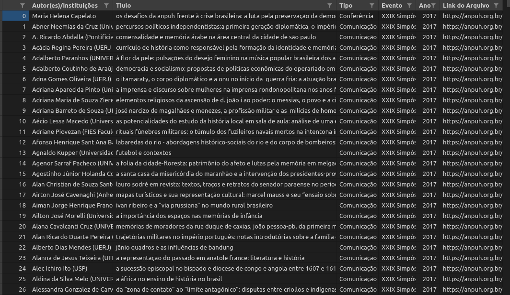

Anpuh
O que é ANPUH?
A Associação Nacional de História, Anpuh, fundada em 1961, inicialmente destinada aos docentes de cursos de graduação e pós-graduação. Em 1993, a ANPUH ampliou sua base para todos os profissionais de história.
A cada dois anos, a ANPUH realiza o Simpósio Nacional de História, o maior e mais importante evento da área de história no país e na América Latina [Anpuh-Quem somos].
Desenvolvemos scripts diferentes para dois tipos de conjuntos de dados relacionados à Associação Nacional de História.
-
Anais-Anpuh: script para raspagem de todos os trabalhos publicados nos Anais dos Simpósio Nacionais de História entre 1963 e 2017, disponíveis no site da Anpuh.
-
Resumos-anpuh CLI: é uma interface de linha de comando (CLI) escrita em Python com objetivo de raspar e organizar os Resumos dos Simpósios temáticos dos SNH dos anos de 2013, 2015, 2017, 2019 e 2021.
Anais-Anpuh


Projeto de script para web scraping da página de Anais da Associação Nacional de História - Anpuh. Parte de projeto de História Digital desenvolvido no colegiado do curso de Licenciatura em História (CCLHM) da Unilab, campus dos Malês, sob coordenação do professor Eric Brasil em parceria com o Laboratório de Humanidades Digitais da Ufba.
O Script Anais-Anpuh realiza a raspagem dos papers em pdf de todos os Simpósios Nacionais da Anpuh entre 1963 até 2017 (disponíveis atualmente na site).
A ferramenta foi desenvolvida apenas para pesquisas acadêmicas, sem fins lucrativos.
Instalação
Para executar o Script Anais-Anpuh, vc precisa acessar a pasta da ferramenta no GitHub. Clone ou faça download do repositório e salve na pasta que deseja que os resultados e seus respectivos arquivos sejam armazenados. Antes de executar o script, é preciso preparar seu computador, como mostramos abaixo.
Python
A ferramenta consiste num script escrito em Python 3.8. Esta é uma linguagem de programação que te permite trabalhar rapidamente e integrar diferentes sistemas com maior eficiência. Para executar o arquivo .py é preciso instalar o Python3 em seu computador.
Clique aqui para um tutorial de instalação do Python no Windows, clique aqui para Linux e clique aqui para Mac.
Após a instalação, vc pode executar o arquivo .py direto do prompt de comando do Windows ou pelo terminal do Linux, ou utilizar as diversas IDE disponíveis.
Exemplo de como executar utilizando o terminal do Linux, após instalar o Python3.8:
- Acesse o diretório em que o arquivo .py está salvo:
$ cd user/local - Instale as bibliotecas requeridas:
$ pip3 install -r requirements.txt - Execute o arquivo usando Python3.8
$ python3.8 script-anais-anpuh.py
Bibliotecas e módulos
- urllib.requests: módulo do Python que ajuda a acessar urls. Saiba mais.
- os: módulo do Python que permite manipular funções do sistema operacional. Saiba mais.
- bs4: Beautiful Soup é uma biblioteca Python para extrair dados de arquivos HTML e XML.
- re: Regular Expressions é um módulo do Python para operar com expressões regulares.
- pandas: Pandas é uma biblioteca escrita em Python para manipulação e análise de dados.
- wget: Wget é uma biblioteca escrita em Python para realizar downloads.
Resultados
O script retorna para o usuário todos os pdfs disponíveis em todas as páginas de todos os Simpósios Nacionais da Anpuh desde 1963 até 2017. São criadas pastas com o número de cada evento para o armazenamento dos arquivos em PDF.

É importante notar que muitos papers não estão com pdf disponível no site, assim como nas edições mais antigas encontramos arquivos que contém vários papers num único PDF.
O script também gera um arquivo CSV (comma-separated values) contendo os seguintes valores para cada paper: Autor(es)/Instituições,Título, Tipo, Evento, Ano, Link do Arquivo. Esse arquivo pode ser aberto como uma planilha e trabalhado em banco de dados.

O script está funcionando perfeitamente. Qualquer alteração no site percebida pelos usuários ou sugestões de aprimoramento são bem vindas.
Download dos dados
Se preferir baixar a base dos PDFs sem usar o código clique aqui.
Licença
MIT licensed
Copyright (C) 2020 Eric Brasil, Gabriel Andrade, Leonardo F. Nascimento, Vitor Mussa, LABHD-UFBA
Resumos-anpuh CLI

resumosanpuh é uma interface de linha de comando (CLI) escrita em Python com objetivo de raspar e organizar os Resumos dos Simpósios Anuais da História da Associação Nacional de História - Anpuh.
O programa raspa todos os resumos dos SNH 27, 28, 29, 30 e 31, respectivamente dos anos de 2013, 2015, 2017, 2019 e 2021 e organiza em um arquivo CSV.
Foi construído a partir do script Anpuh Scraper, DOI 10.5281/zenodo.5168720, disponível aqui.
Desenvolvido no âmbito do Laboratório de Humanidades Digitais da UFBA e parte do Repositório Digital das Humanidades (PT-BR) - REDHBR.
A ferramenta foi desenvolvida apenas para pesquisas acadêmicas, sem fins lucrativos.
Instalação
Para executar a CLI, vc precisa clonar ou fazer download do repositório e salvar na pasta em que deseja que os resultados e seus respectivos arquivos sejam armazenados.
A ferramenta consiste em uma interface de linha de comando (CLI) escrita em Python 3.
Para informações de como instalar o Python em seu sistema operacional, veja a lição Introdução e instalação do Python no Programming Historian.
Abra o terminal e mude seu caminho até a pasta resumos-anpuh-cli e execute o comando:
sudo pip3 install -e .
OBS: Se você não possui o pip instalado basta executar no terminal sudo apt install python3-pip em sistemas operacionais baseados no Ubuntu. Para instruções de instalação no Windows ver essa lição do Programming Historian.
As bibliotecas e módulos, assim como o pacote, serão instalados automaticamente.
Bibliotecas e módulos
- urllib.requests: módulo do Python que ajuda a acessar urls. Saiba mais.
- bs4: Beautiful Soup é uma biblioteca Python para extrair dados de arquivos HTML e XML.
- pandas: Pandas é uma biblioteca escrita em Python para manipulação e análise de dados.
Usos e opções
Após a instalação, para executar a ferramenta basta abrir o terminal e digitar resumosanpuh seguido de -y ou --years e passar os anos que deseja raspar como parâmetro 2013 2015 2017 2019 2021.
Opcionalmente é possível definir o nome do arquivo csv final acrescentando -o ou --output seguido de <nome_do_arquivo>.csv. Caso essa opção não seja definida o título do arquivo será <AAAA-MM-DD_HH-MM-SS>.csv
resumosanpuh -y 2013 2019 -o resumos_2013-2019.csv
Também é possível utilizar a opção -h ou --help para ver a ajuda completa.
resumosanpuh -h
usage: helloworld [-h] -y [...] [-o]
Raspador dos resumos dos Simpósios Nacionais de História da Associação Nacional de História -
Anpuh. O programa raspa todos os resumos dos SNH 27, 28, 29, 30 e 31, respectivamente dos anos
de 2013, 2015, 2017, 2019 e 2021. Desenvolvido no âmbito do Laboratório de Humanidades Digitais
da UFBA e parte do Repositório Digital das Humanidades (PT-BR) - REDHBR.
optional arguments:
-h, --help show this help message and exit
-y [ ...], --years [ ...]
Lista de anos a serem raspados. Exemplo: 2013 2015 2017 2019 2021. Essa
opção é obrigatória.
-o , --output Nome do arquivo de saída no formato .csv. Se essa opção não for definida, o título do arquivo será `<AAAA-MM-DD_HH-MM-SS>.csv`
Resultados
A ferramente retorna para o usuário um CSV (comma-separated values) com os dados de todos os trabalhos aceitos nos Simpósio Temáticos dos SNH 27, 28, 29, 30 e 31.
O CSV contém as seguintes variáveis para cada resumo:
Ano, Evento, Cidade, ST, Coordenadores, Autor(es)/Instituições, Título, Resumo
Esse arquivo pode ser aberto como uma planilha e trabalhado em banco de dados.
Contando o número de linhas e de linhas por ano, com pandas, temos o seguinte resultado:
| Ano | Número de linhas |
|---|---|
| 2013 | 2678 |
| 2015 | 2770 |
| 2017 | 2802 |
| 2019 | 3240 |
| 2021 | 2728 |
| Total | 14218 |
Download dos dados
Se preferir baixar a planilha sem usar o código clique aqui.
Licença
Autor: Eric Brasil (IHLM-UNILAB)